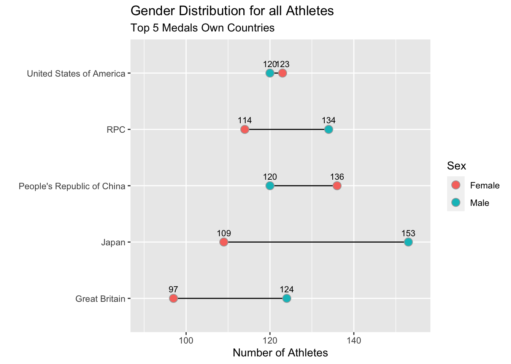

library(ggplot2)library(dplyr)library(colorspace) library(RColorBrewer)library(ggthemes)library(forcats)athletes <-read_excel("data/Athletes.xlsx")gender <-read_excel("data/EntriesGender.xlsx")medals <-read_excel("data/Medals.xlsx")coaches <-read_excel("data/Coaches.xlsx")historical <-read_csv("data/All Year Olympic Dataset (with 2020 Tokyo Olympics).csv")
New names:
Rows: 275643 Columns: 10
── Column specification
──────────────────────────────────────────────────────── Delimiter: "," chr
(6): Name, Sex, Team, Games, Season, Sport dbl (4): ...1, Age, Year, Medal
ℹ Use `spec()` to retrieve the full column specification for this data. ℹ
Specify the column types or set `show_col_types = FALSE` to quiet this message.
• `` -> `...1`
There are 2 datasets included in this analysis. The first dataset is the information collected from 2021 Tokyo Olympics. It includes the number of athletes, gender, total number of medals, and number of coaches. The second dataset is the historical data including all athelets information from 1896 to 2021. The information includes name, age, sex, year of attending, winter/summer olympics, number of medal, and sport details. The following analysis is aimed to present the pattern of athletes from top medal winners in 2021 Tokyo.
#Top 10 number of athletes by country athletes %>%count(NOC, sort =TRUE) %>%slice(1:10) %>%group_by(NOC) %>%ggplot(aes(x=reorder(NOC, desc(n)), y=n, fill = n)) +geom_col(color ="black") +labs(title ="Top 10 Countries by the Number of Athletes", x="Countries", y ="Number of Athletes", subtitle ="Number of Athelets")+theme(axis.text.x =element_text(size =8, color ="red", face ="bold.italic", angle =50, hjust =1), axis.title.y =element_text( size =8, color ="red", face ="bold.italic"))+ylim(c(0, 1000))+geom_text(mapping =aes(label = n, size =12, color ="red", face ="bold.italic", vjust =-1))+theme(legend.position ="none")
Warning: Ignoring unknown aesthetics: face
#This graph gives a ranking of the number of total athletes attended the Tokyo Olympics. It shows the population base of each country and how different countries emphasize on the olympic games. The number of athletes will be the reference in the following analysis on the number of medals that each country wins. Since Japan is the host of the game, it has the second highest number of athletes, compared to other countries with higher population level.
# Numbers of athelets v.s. Number of Coachesmedals_break_country <- medals %>%rename(country ='Team/NOC', rank ='Rank by Total') %>%pivot_longer(Gold:Bronze,names_to ="medal", values_to ="number_of_medal") %>%transform(number_of_medal =as.numeric(number_of_medal), Total =as.numeric(Total), rank =as.numeric(rank)) %>%arrange(rank) %>%slice(1:15) ggplot(medals_break_country,aes(reorder(country,number_of_medal), number_of_medal,fill =factor(medal, levels =c("Bronze","Silver","Gold")))) +geom_col(col="black") +labs(fill ="Type of medal",y="Number of medal (Medal)",x="Country",title='Number of medals breakdown by country',subtitle='Top 5') +coord_flip()+theme(plot.title =element_text(hjust=0.5,size=16),axis.text.x =element_text(size=12),axis.text.y =element_text(size=12),axis.title =element_text(size=12),plot.subtitle =element_text(hjust=0.5,size=8))+ylim(0,120)
# This graph shows the ranking of Top 5 medal winning countries. Compared to the number of athletes, we can see that four out of five countries are within the top 10 number of athletes attending the Olympic games. The only exception ins ROC, which might due to the sanction on Russia. But the overall pattern is those countries with more athletes will win more medals in the game.
#Athletes Age distribution for Top5 medal countries in Tokyohistorical %>%filter(Year ==2020) %>%filter(Team =="United States of America"| Team =="People's Republic of China"|Team =="RPC"|Team =="Great Britain"|Team =="Japan")%>%ggplot(aes(x=Age,fill = Team))+geom_density(alpha =0.7)+labs(title ='Distribution of Age for all Athletes',subtitle ='Top 5 Medals Own Countries',x='Age',y='')
historical %>%filter(Medal >0, Year ==2020) %>%filter(Team =="United States of America"| Team =="People's Republic of China"|Team =="RPC"|Team =="Great Britain"|Team =="Japan")%>%ggplot(aes(x=Age,fill = Team))+geom_dotplot(alpha =0.7)+labs(title ='Distribution of Age for Medal Winners',subtitle ='Top 5 Medals Win Countries',x='Age',y='')+ylim(0,200)
Bin width defaults to 1/30 of the range of the data. Pick better value with `binwidth`.
# This graph shows the age distribution of medal winning athletes from Top 5 medal winner countries. We can see the PRC has the highest number of athletes between 20-35, which is the age that people has the best physical condition. For the medal winners over age 50, the athletes come from the US, China and UK. It might prove the technology and training level of the athletes from those country, so that they can maintain a higher competition level.
#Gender Distributionhis <- historical %>%filter(Year ==2020) %>%filter(Team =="United States of America"| Team =="People's Republic of China"|Team =="RPC"|Team =="Great Britain"|Team =="Japan")%>%group_by(Team) %>%count(Sex)his
# A tibble: 10 × 3
# Groups: Team [5]
Team Sex n
<chr> <chr> <int>
1 Great Britain Female 97
2 Great Britain Male 124
3 Japan Female 109
4 Japan Male 153
5 People's Republic of China Female 136
6 People's Republic of China Male 120
7 RPC Female 114
8 RPC Male 134
9 United States of America Female 123
10 United States of America Male 120
ggplot(his,aes(n,Team,fill=Sex))+geom_line(aes(group=Team))+geom_point(shape=21,size=3.5,colour="darkgray")+geom_text(color="black", size=3, hjust=0.5,vjust =-1,aes(x=n, label=n))+labs(title ='Gender Distribution for all Athletes',subtitle ='Top 5 Medals Own Countries',x='Number of Athletes',y='')+scale_x_continuous(breaks =seq(50, 300, 10))+xlim(90,155)
Scale for 'x' is already present. Adding another scale for 'x', which will
replace the existing scale.

# This graph shows the gender distribution of athletes from Top 5 medal winning countries. From the graph we can see the US has the smallest gender gap between men and women athletes. The largest gap comes from Japan, which men is about 50% more than the number of women athletes. The gender gap will shows the gender equality level of the country in the athletic sports.